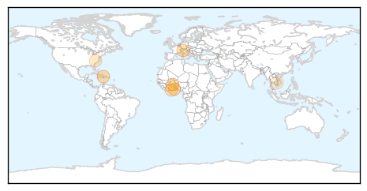
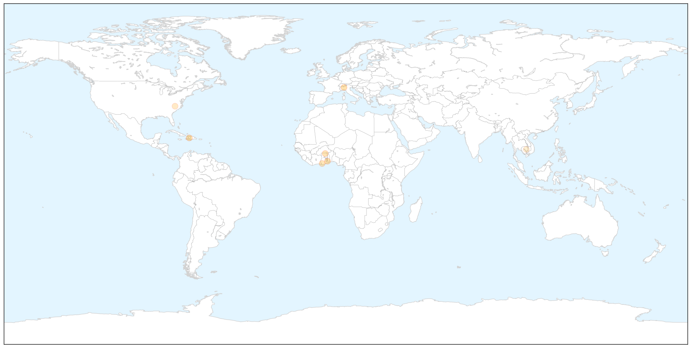

Hepatitis
30-Day Web Trend
2 alerts, 1 warnings

30-Day Twitter Trend
0 alerts, 0 warnings

Article Locations

Article Confidences

Top Articles:
- 0.866
- Hepatitis C cases rise in this village in Greater Noida : India, News
- 0.785
- R.I. Medicaid limits supply of Hepatitis C drug due to cost
- 0.617
- Patient tests negative in 2nd potential Hepatitis A case linked to Mercer County restaurant
- 0.608
- CDC Endorses Circumcision for Health Reasons
- 0.545
- BMS announces nine grants to support care for high-risk patients with Hepatitis B & C in India & China
Top Tweets:
-
No tweets found for Dec 04, 2014
Cholera
30-Day Web Trend
0 alerts, 0 warnings

30-Day Twitter Trend
4 alerts, 0 warnings

Article Locations

X

Article Confidences

Top Articles:
- 0.963
- Rice could make cholera treatment more effective
- 0.951
- Rice could make cholera treatment more effective
- 0.893
- Local gov’t responsible for cholera prevention
- 0.868
- Keta fights cholera in 2014 -
- 0.826
- Cholera prevention is the duty of local govt. -
- 0.667
- Homeland Security News Wire
- 0.530
- UCSF's battle with tuberculosis
Top Tweets:
- 0.613
- RT: NEWS SCAN: Saudi MERS cases continue; Chikungunya hot spots; Cholera in the Caribbean http://t.co/L5evGWeqXn